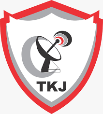

Jurusan TKJ menghasilkan tamatan yang memiliki pengetahuan, keterampilan, nilai serta sikap yang terintegrasi dan kecakapan kerja dalam bidang teknologi, serta memiliki wawasan Technopreneur untuk menghadapi perkembangan Masyarakat Economic Asean (MEA)
Jurusan TKJ
TKJ merupakan salah satu kompetensi keahlian pada program studi Keahlian Teknik Informatika dan Komunikasi (TIK). TKJ saat ini keberadaannya sudah terlihat dimata publik dimana jurusan ini mendekati ilmu praktisi yang langsung dapat di implementasikan di dunia kerja. Perkembangan teknologi yang sangat pesat akan menjadi tantangan tersendiri di dunia kerja sehingga dibutuhkan keterampilan yang baik dibidang teknologi salah satunya jaringan. Siswa TKJ akan dibekali teori awal dari komputer dan jaringan yang diimbangi dengan praktek merakit komputer, memperbaiki laptop. Disamping itu siswa TKJ juga mempelajari tentang perkembangan sistem operasi dan software seperti sistem operasi Windows, Linux dan cara menginstalnya. Jurusan TKJ ini selain mempelajari itu semua mereka juga dibekali dengan troubleshoting komputer, perawatan komputer, perawatan hardware lainnya. Jurusan TKJ menghasilkan tamatan yang memiliki pengetahuan, keterampilan, nilai serta sikap yang terintegrasi dan kecakapan kerja dalam bidang teknologi, serta memiliki wawasan Technopreneur untuk menghadapi perkembangan Masyarakat Economic ASEAN (MEA).(MOU dengan ZOOMVLIET COLLEGE NETHERLANDS dan DU/DI )
TKJ merupakan salah satu kompetensi keahlian pada program studi Keahlian Teknik Informatika dan Komunikasi (TIK). TKJ saat ini keberadaannya sudah mulai terlihat dimata publik dimana jurusan ini mendekati ilmu praktisi yang langsung dapat di implementasikan di dunia kerja. Perkembangan teknologi yang sangat pesat akan menjadi tantangan tersendiri di dunia kerja sehingga dibutuhkan keterampilan yang baik dibidang teknologi salah satunya jaringan.Telah bekerjasama dengan Zoomvliet College Netherlands (Belanda) tentang Exchange Students, pertukaran pelajar, setiap tahun
Siswa TKJ akan dibekali teori awal dari komputer dan jaringan yang diimbangi dengan praktek merakit komputer, memperbaiki laptop. Disamping itu siswa TKJ juga mempelajari tentang perkembangan sistem operasi dan software seperti sistem operasi Windows, Linux dan cara menginstalnya. Jurusan TKJ ini selain mempelajari itu semua mereka juga dibekali dengan troubleshoting komputer, perawatan komputer, perawatan hardware lainnya.Jurusan TKJ menghasilkan tamatan yang memiliki pengetahuan, keterampilan, nilai serta sikap yang terintegrasi dan kecakapan kerja dalam bidang teknologi, serta memiliki wawasan Technopreneur untuk menghadapi perkembangan Masyarakat Economic Asean (MEA)
Fasilitas
- Ruang Kelas
- Laboratorium Jaringan Komputer Full AC
Lingkup Pekerjaan
- Wirausaha mandiri
- Teknisi di berbagai perusahaan , instansi yang terkait dengan IT